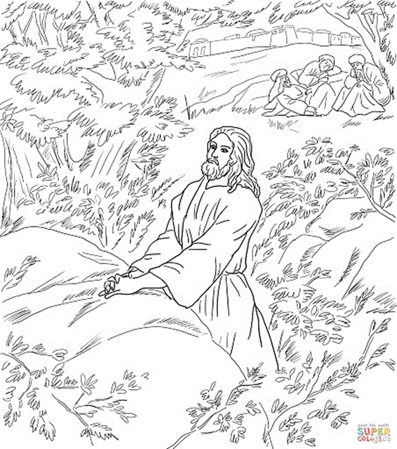

Nauczanie zdalne
Klasa 4A
wychowawca Grzegorz Gos
Piątek 24.04.2020r
J.polski
Temat: Powtórzenie wiadomości o częściach mowy.
1. Przeczytaj tekst.
Mama czyta Oli baśń o Kopciuszku. Dziewczynce podoba się ta
interesująca historia. Zmartwiła się, kiedy Kopciuszek zgubiła na balu
szklany pantofelek. Teraz jest szczęśliwa, że wszystko dobrze się
skończyło.
2. Wypisz z tekstu do zeszytu 3 czasowniki, 3 rzeczowniki, 3 przymiotniki.
czasowniki (co robi? co się z nim dzieje?)
......................
rzeczowniki (kto?co?)
.........................
przymiotniki (jaki? jaka? jakie?)
........................
Technika - Marek
https://www.youtube.com/watch?v=3pAqiMqe7yA
Obejrzyj film , jak zauważyłeś pokazane są dwa światła , zielone ,które oznacza że możesz przejść bezpiecznie przez przejście dla pieszych, czerwone , które oznacza , ze nie możesz wejść na przejście dla pieszych. Mam pytanie , na części sygnalizatorów jest jeszcze dodatkowy kolor (żółty), napisz mi proszę co oznacza?Na odpowiedź czekam do przyszłego czwartku.
Napisz na karteczce . zrób zdjęcie i wyślij mi wiadomością mms na mój nr telefonu 725 846 424. pozdrawiam
Ania K, Wiktoria S, Wiktoria W , Kuba K . BARDZO DOBRE ODPOWIEDZI OD WAS UZYSKAŁEM
Technika - Ewa
TECHNIKA /PRACOWNIA GOSPODARSTWA DOMOWEGO KLASA 4
Dzisiaj rozpoczniemy nową pracę. Będzie to pamiątkowy album z podróży.
Przepisz do zeszytu temat lekcji i podpunkty I i II.
Temat: To takie proste pamiątkowy album (1)
I. Materiały i narzędzia:
5 kartek z bloku, ołówek, linijka, klej w sztyfcie lub biurowy, sznureczek do związania wszystkich kartek, dziurkacz, kolorowe pisaki, kredki, kolorowe gazety
II. Plan pracy:
1. Wykonanie dziurek z boku każdej kartki
2. Przeciągnięcie sznureczka przez kartki i związanie ich razem
3. Wykonanie strony tytułowej albumu
4. Wykonanie pozostałych stron albumu
5. Prace wykończeniowe
Obejrzyj film. Zobaczysz jak w prosty sposób można wykonać album.
https://www.youtube.com/watch?v=H43QGE49jhA
Dzisiaj wykonaj stronę tytułową albumu. Do jej wykonania możesz użyć wszystkich dostępnych materiałów.
Pierwsza strona powinna być bardzo ozdobna.
W przyszłym tygodniu zrobimy pozostałe strony albumu.
Pamiętaj o zachowaniu bezpieczeństwa podczas posługiwania się nożyczkami.
Zrób zdjęcie swojej pracy i prześlij mi na mój adres e - mail.
J.angielski
Dzisiaj obejrzymy krótki film związany z miastem i jego zabudową.
Lesson
Topic: Our small town. Nasze małe miasteczko.
(Tego tekstu w nawiasie nie trzeba przepisywać, proszę jednak RODZICÓW o pomoc w przeczytaniu dzieciom na głos w filmie zobaczycie małe miasteczko opowiadać będzie o nim chłopiec. Miasteczko podzielone jest na kwartały czyli te obszary ograniczone ulicami. Kwartał to po angielsku block chłopiec z filmu omawia, jakie budynki znajdują się w każdym kwartale miasteczka. Zauważycie, że niektóre nazwy budynków różnią się od tego, co poznaliście do tej pory. Jest tak dlatego, że filmik został nagrany w USA /Stanach Zjednoczonych Ameryki Północnej/ i nazwy budynków podane są w American English /Amerykańskim Angielskim/, a nazwy, które poznawaliśmy do tej pory, były w British English /Brytyjskim Angielskim/ - wiem, że może to być mylące, ale jeszcze nie raz spotkacie się podczas nauki z taką sytuacją. A teraz już zapraszam na film:
https://www.youtube.com/watch?v=EfD2k9beP-4 )
Town - miasteczko
1st block pierwszy kwartał
Hospital szpital
Bank bank
2nd block drugi kwartał
Post office poczta
Fire station remiza strażacka
3rd block trzeci kwartał
School szkoła
Library biblioteka
Museum museum
Park park
4th block czwarty kwartał
Supermarket supermarket
Police office komisariat policji
5th block piąty kwartał
Bus stop przystanek autobusowy
Theater kino (choć to samo słówko oznacza też teatr, ale w tym wypadku chodzi o kino)
Bakery piekarnia
Restaurant restauracja
Po przepisaniu do zeszytu, obejrzyj film jeszcze raz i powtarzaj słówka. Wykonaj tą czynność przynajmniej dwa razy (ale jeżeli chcesz, możesz więcej ;)
Pozdrawiam!
WDZ
Temat: Przekazywanie życia. (dla chłopców)
Proszę oglądnąć film:
https://www.cda.pl/video/292827039
Czwartek 23.04.2020r
J.polski
Temat: Gdy imię ma magiczną moc.
1. Przypomnij sobie fragment streszczenia książki Michaela Ende Nie kończąca się historia
(...) Atreju dowiaduje się, że aby ocalić Fantazjanę, Dziecięcej Cesarzowej potrzebne jest nowe imię. Może je wymyślić jedynie człowiek z zewnątrz - spoza granic fantazji. (...)
2. Wymyśl imię dla Dziecięcej Cesarzowej i zapisz je w zeszycie.
3. Uzupełnij w zeszycie zdania: Mam na imię................Moja mama ma na imię ........... Mój tato ma na imię ..............Pamiętaj, że imiona zawsze piszemy wielką literą.
Przyroda
Temat: Na polu uprawnym. 23.04
Dowiedz się, jakie rośliny uprawia się na polach w okolicy twojego miejsca zamieszkania. Opisz ich zastosowanie czy są to rośliny spożywcze, czy też uprawia się je w innych celach.
Zapisz w zeszycie:
Na polach u nas uprawia się..............................
Do najczęściej uprawianych zbóż należą: pszenica, żyto, owies, jęczmień. Uprawia się również: ziemniaki, buraki cukrowe, warzywa,
Jak powstaje chleb? Obejrzyj film
https://www.eduelo.pl/prezentacja/828/
A teraz sprawdź czy dobrze ułożyłam kolejność?
1. wysiew zboża
2. ciasto piecze się w piecu i mamy gotowy chleb
3. ziarna mieli się w młynach na mąkę
4. zboże dojrzewa i zostaje ścięte
5. mąka trafia do piekarni i piekarz przygotowuje ciasto
Jaka jest właściwa kolejność: zapisz cyfry
Historia
TEMAT: Astronom, który poruszył Ziemię.
Zapisz notatkę w zeszycie.
Polski astronom, urodził się 1473 r. w Toruniu. Opracował heliocentryczny model Układu Słonecznego, według którego Słońce znajduje się w centrum, Ziemia jest planetą i podobnie jak pozostałe planety obiega Słońce po orbicie kolistej. Mówi się że Kopernik WSTRZYMAŁ SŁOŃCE, RUSZYŁ ZIEMIĘ. Jego teoria została opublikowana w 1543 r. w księdze O obrotach sfer niebieskich.
Matematyka
Temat: Dzielenie pisemne liczb
Zapoznaj się z treścią filmu i uważnie go obejrzyj
https://www.youtube.com/watch?v=qzIaynGn5P4
Spróbuj rozwiązać zadania podane w linku poniżej
https://www.matzoo.pl/klasa4/dzielenie-pisemne-poziom-a_60_568
W zeszycie zapisz pierwsze 3 przykłady.
Usprawniania
Zadania umieszczone na koncie FB Usprawnianie Nysa
Środa 22.04.2020r
J.polski
Temat: Pamiątki z baśniowych krain.
1. Przeczytaj i zapamiętaj wyjaśnienie słowa baśń
baśń - utwór literacki o treści fantastycznej, opowiada zazwyczaj o
cudownych, magicznych wydarzeniach i niesamowitych zjawiskach
2. Przypomnij sobie baśnie, które czytaliśmy na lekcjach i dopasuj
przedmiot do tytułu baśni. Zapisz w zeszycie.
Przykład: Królowa pszczół - perły
Kopciuszek, Bajka o rybaku i rybce, Jaś i Małgosia,
pierniki, pantofelek, łódź
Religia
Obrazek od księdza
J.angielski
Dzisiaj poznamy budynki i instytucje znajdujące się w mieście.
Lesson
Topic: Buildngs and institutions in a town budynki i instytucje w mieście.
Town hall urząd miasta/ratusz
Church kościół
Train station dworzec kolejowy
Bus station dworzec autobusowy
Police station komisariat policji
Fire station remiza strażacka
Hospital - szpital
Post office urząd pocztowy
Theatre teatr
Library biblioteka
Aby dobrze zapamiętać poznane dzisiaj słówka, obok każdego z nich wykonaj mały rysunek obrazujący dane słowo.
Informatyka
Temat: Metody stosowane w komputerowym pisaniu
Obejrzyj filmik
https://www.youtube.com/watch?v=0LrmSqDc8tk
Wykonaj zadanie. Wyślij mi wynik końcowy. Użyj maila, komunikatora, telefonu.
Matematyka
Temat: Temat: Mnożenie pisemne przez liczby wielocyfrowe ćwiczenia
Rozwiąż działania podane w linku poniżej
https://www.matzoo.pl/klasa4/mnozenie-pisemne-przez-liczbe-dwucyfrowa_60_132
Zapisz w zeszycie pierwsze 5 przykładów.
W-f chłopcy
Do ucznia: Zachowaj zasady BHP podczas ćwiczeń.
1. Oglądnij film
https://youtu.be/0Nz6qgyELXc
2. Wykonaj rozgrzewkę jak podczas lekcji wychowania fizycznego w szkole.
3. Powtórnie oglądnij film z pkt. 1.
4. Przećwicz wszystkie rodzaje startów z filmu za modelem.
5. W miarę możliwości nagraj film że swoimi ćwiczeniami i odeślij wychowawcy.
6. Oglądnij film
https://youtu.be/sJHERmQTaCQ
7. Bloki startowe możesz wykonać sam wykopując dołki w ziemi na podwórku.
8. Spróbuj wykonać kilka startów niskich.
POWODZENIA!!!
Zajęcia usprawniające dostępne na FB - Usprawnianie Nysa
Wtorek 21.04.2020r
J.polski
Temat: Nie wstydźmy się marzeń. Przeczytaj wyjaśnienie słowa marzyć. marzyć - wyobrażać sobie to, czego się pragnie, rozmyślać o rzeczach przyjemnych, często nierealnych 2. Oto fragment teksu, który czytałeś/aś na wczorajszej lekcji. Zastanów się, czy naprawdę ludzie już nie mają marzeń. (
) Tymczasem baśniowa okolica znika, gdyż ludzie przestali marzyć.(
) 3. Dokończ w zeszycie zdanie: Moim największym marzeniem jest......................
Religia
Szczęść Boże,
poniższe zadania są przewidziane na dwie jednostki lekcyjne tj. wtorek i środę.
pozdrawiam.
------------------------------------------------
Pan Jezus Baranek Boży
Obejrzyj film, a następnie pokoloruj poniższą kolorowankę
https://www.youtube.com/watch?v=IcKql6jn1mc

Plastyka
TEMAT : WIOSENNA ŁĄKA
/malarstwo, barwy podstawowe i pochodne/
Do wykonania pracy będą potrzebne : kartka papieru z bloku rysunkowego lub technicznego
farby plakatowe albo akwarelowe , mogą być też pastele.
Popatrz na przyrodę wiosną, jak rozwijają się rośliny jak wyglądają drzewa. Zaobserwuj jakich
kolorów widzisz najwięcej. Jeśli to np. zieleń to jaki ma odcień - jasny czy ciemny, jakich
innych kolorów jest jeszcze najwięcej. Na podstawie swoich obserwacji namaluj wiosenna łąkę.
Pamiętaj o wykorzystaniu wiadomości o kolorach podstawowych / CZERWONY, ŻÓŁTY, NIEBIESKI/
i pochodnych / ZIELONY, FIOLETOWY, POMARAŃCZOWY/
Obejrzyj ten filmy może pomóc
https://www.youtube.com/watch?v=gbwkT0mP-xs
Wszystkie prace plastyczne które wykonasz w czasie nauki w domu
trzeba zachować, możesz też zrobić zdjęcie pracy i wysłać na stronę beata.chmiel20@wp.pl
do oceny.
Matematyka
Temat: Mnożenie pisemne przez liczby wielocyfrowe ćwiczenia
Obejrzyj uważnie film i oblicz razem z lektorem a zadania tam pokazane zapisz w zeszycie
https://www.youtube.com/watch?v=0th3kgdzyZU
Usp
Zadania umieszczone na FB
https://www.facebook.com/usprawnianie.nysa
W-f
Chłopcy
WAŻNE!!!!
Zachowaj zasady BHP podczas ćwiczeń!!!!
1. Oglądnij dokładnie film
https://youtu.be/TFgBI70Dh6E
2. Zrób rozgrzewkę zgodnie z modelem na filmie oczywiście zachowując
swoje tempo pracy.
3. Spróbuj wykonać poszczególne ćwiczenia najdokładniej jak to możliwie
naśladując ruchy modela.
4. Nagraj film z 5 ćwiczeniami i odeślij wychowawcy lub słownie opisz w jaki
sposób wykonałeś 5 dowolnie wybranych ćwiczeń.
Udanych ćwiczeń.
Dziewczynki
TEMAT: Kształcenie cech motorycznych pod kątem p.nożnej-ćwiczenia ogólnorozwojowe
#zostańwdomu#trenuj w domu !!!
Przypominam o zasadach bhp podczas ćwiczeń w domu,tak jak na lekcjach wf w szkole. Proszę również pamiętać, że ćwiczymy tylko i wyłącznie jak jesteśmy zdrowi.
Pamiętajmy przed rozpoczęciem ćwiczeń ,aby zrobić 10 minutową rozgrzewkę (ćwiczenia pamiętamy z lekcji)
Potrzebne przybory: ręcznik
Proszę zrobić proste ćwiczenia z autorem. ĆWICZENIA POWTARZAMY DWUKROTNIE .
https://youtu.be/HriJ5zXHDJ
Poniedziałek 20.04.2020r
Matematyka kl. 4
Temat: Mnożenie pisemne przez liczby wielocyfrowe
Zapoznaj się z tematem lekcji oglądając uważnie film:
https://www.youtube.com/watch?v=U-7nypMB_ow
Zadanie 1
Oblicz zadania znajdujące się w linku poniżej:
https://www.matzoo.pl/klasa4/mnozenie-pisemne-poziom-a_60_66
Napisz w zeszycie pierwsze 3 przykłady.
Lekcja 2 i 3 Język angielski
Poznajemy dzisiaj przestrzeń w mieście co się w nim znajduje? Co nas otacza? W zeszycie wypiszemy słowa związane z przestrzenią miejską skupiając się głównie na ulicach i poruszaniu się po mieście.
Lesson
Topic: This is our town to jest nasze miasto.
Street ulica
Sidewalk chodnik
Zebra crossing przejscie dla pieszych
Crossing/intersection - skrzyżowanie
Roundabout - rondo
Traffic lights światła ruchu drogowego
Street corner róg ulicy
Bus top przystanek autobusowy
Bridge most
Railroad tracks tory kolejowe
Aby dobrze zapamiętać poznane dzisiaj słówka, obok każdego z nich wykonaj mały rysunek obrazujący dane słowo
Lekcja 2 i 3 Usprawnianie
zadania umieszczone na koncie FB
https://www.facebook.com/usprawnianie.nysa
Lekcja 4 Przyroda
Temat: Na łące.
Kiedyś łąki występowały w Polsce naturalnie tylko w dolinach rzek i wysoko w górach.
Na łąkach spotyka się liczne gatunki zwierząt, a wśród nich przede wszystkim liczne bezkręgowce m.in. owady- pasikoniki, motyle, mrówki, trzmiele, pająk. Żyją tu także płazy (np. żaba trawna i ropuchy) oraz gady węże i jaszczurki. Na łąkach gnieżdżą się kuropatwy. Można też spotkać niewielkie ssaki: myszy, krety i zające.
Obejrzyj film i napisz jakie rozpoznałeś zwierzęta?
https://www.youtube.com/watch?v=bgmm4e9ARw4
Na naszych łąkach często spotykamy motyle. Zobacz jak gąsienica przeobraża się w motyla
https://www.youtube.com/watch?v=zNeizTuJCgg
Lekcja 5 Język polski
Temat: Na ratunek Fantazjanie.
1. Przeczytaj uważnie fragment streszczenia powieści Michaela Ende pt:
Nie kończąca się historia i uzupełnij w zeszycie notatkę.
Bastian Baltazar Buks jest jedenastoletnim chłopcem, który uwielbia
książki. Któregoś dnia wchodzi do antykwariatu i zauważa książkę
Nie kończąca się historia. Zaintrygowany tytułem zabiera ją i zamiast
na lekcje, idzie na szkolny strych czytać książkę.
Fantazjanie, tajemniczej baśniowej krainie, grozi zagłada. Nikt nie
może znaleźć lekarstwa na chorobę Dziecięcej Cesarzowej. Fantazjana
powoli znika. Jest jednak przepowiednia mówiąca o młodym myśliwym, o
imieniu Atreju, który może ocalić baśniowy świat. Wyrusza on na
poszukiwania lekarstwa mogącego odmienić zbliżający się los.
Atreju dowiaduje się, że aby ocalić Fantazjanę, Dziecięcej Cesarzowej
potrzebne jest nowe imię. Może je wymyślić jedynie człowiek z
zewnątrz - spoza granic fantazji. Tymczasem baśniowa okolica znika, gdyż
ludzie przestali marzyć.
(
)
antykwariat - sklep, w którym można kupić bardzo stare książki i
przedmioty
Tytuł: Nie kończąca się historia
Autor: Michael Ende
Bohaterowie:
Lekcja 6 Muzyka
Temat: Ludwig van Beethoven I jego muzyka.
1.Ludwig van Beethoven
był niemieckim kompozytorem, grał na organach , fortepianie i skrzypcach. Żył na przełomie XVIII-XIX w, był jednym z ostatnich z kompozytorów z epoki klasycyzmu. Tworzył i mieszkał w Wiedniu, mieście, które było wówczas stolicą kulturalną Europy i największym ośrodkiem muzycznym tych czasów. Beethoven komponował sonaty, koncerty fortepianowe, kwartety smyczkowe, symfonie.
2. Posłuchajcie utworu Ludwika van Beethowena I zastanówcie się na jakie instrumenty jest skomponowany ?
https://www.youtube.com/watch?v=NAmOjGt0lK4
3. Notatka do zeszytu.
Napisz temat lekcji oraz 4 zdania o kompozytorze.
Lekcja 7 . W-f dziewczynki
TEMAT: Gry i zabawy ruchowe z elementami minipiłki siatkowej
#zostańwdomu#trenuj w domu !!!
Przypominam o zasadach bhp podczas ćwiczeń w domu,tak jak na lekcjach wf w szkole. Proszę również pamiętać, że ćwiczymy tylko i wyłącznie jak jesteśmy zdrowi.
Pamiętajmy przed rozpoczęciem ćwiczeń z butelką ,aby zrobić 10 minutową rozgrzewkę (ćwiczenia pamiętamy z lekcji)
Potrzebne przybory: piłka lub balon , papier toaletowy
Proszę wykonać w domu ćwiczenia z piłką lub papierem toaletowym tak jak na filmiku w miarę swoich możliwości.Każdy element ćwiczymy ok.1 min. ,powtórzmy to 5 razy.
Proszę się nie zniechęcać ,jeżeli nie mamy piłki tylko papier. Trzymam kciuki i wierzę że się uda.
https://youtu.be/f-kgTLaABmA
Archiwum
15-17.04
06-08.04
30.03-03.04
25-27.03